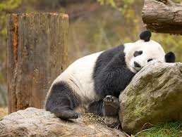
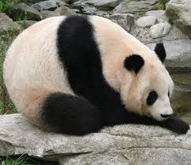
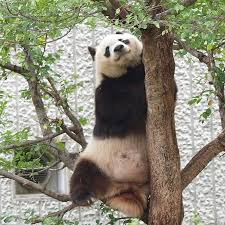
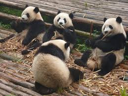
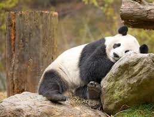
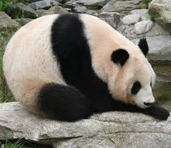
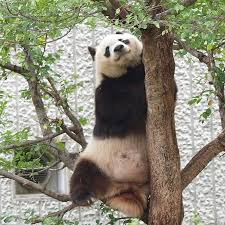
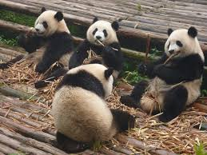
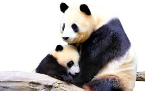
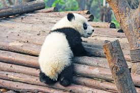

Common Knowledge
They are a cute black and white panda that can grow upto 4 feet. There tail is short and more stub like. The males are taller and heavier than the females but both have a thick wool coat that keeps them warm. There teeth are strong because they almost always eat bamboo, however, they are marked technically as a carnivore. The reason for this is their digestive system is set up as more of a carnivore than a herbivore. Scientists’ don’t know how long a Giant Panda lives for in the wild life but a panda has lived up to 35 in a zoo.
Stuff to know
The scientific name for the Giant Pandas is Ailuropoda melanoleuca. The Giant Pandas are the considered the rarest bear species on the planet. However unlike most bears Giant Pandas tend to 26 to 84 pounds of bamboo a day instead of meat. Nonetheless, they are technically marked as a carnivore because of their digestive system being set up as more of a carnivore than a herbivore. They tend to eat for 10-16 hours a day and take naps in between their feeding. When they eat they tend to sit like a human would on the floor. Giant Pandas don’t use noise to communicate much and tend to be more kept to themselves. When you spot one it will usually be by itself but sometimes they were be in a group. Although they do like making noise when they play with each other.
 







Conservation
 Not many people realize this but Giant Pandas are an endangered species. Although the number of Giant Pandas are starting to rise they do not populate fast, which means they are still an endangered species. There are several different reasons that make them extinct. The biggest reason they are extinct is not from people hunting them but from logging. When people built roads and houses in their habitat it makes it harder to migrate when the bamboo dies. It also makes mating harder because the logging makes it harder for a male and female to find each other
There are estimated 1,800 to 1,864 Giant Pandas in the wild. China government tried to change this by beginning a conservation effort to protect the Giant Pandas. They made Pandas Reserves all throughout China in the wild and made passage ways. This made it easier for Giant Pandas to get to one habitat to the next, which makes it easier to find food and mate.